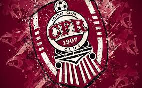

SPORT / April 03, 2023
CFR Cluj obtine o victorie impresionanta in Europa League: 3-0 impotriva celor de la Young Boys
CITESTE MAI MULT [...]
Echipa de fotbal CFR Cluj a reusit sa obtina o victorie importanta in Europa League, in meciul impotriva celor de la Young Boys din Elvetia. Jocul s-a desfasurat pe stadionul Dr. Constantin Radulescu din Cluj-Napoca, iar echipa locala a reusit sa se impuna cu scorul de 3-0. Acest rezultat le-a dat o mare sansa de a avansa in grupele Europa League.
In timpul meciului, echipa CFR Cluj a avut o performanta solida si bine organizata. Jucatorii lor au fost disciplinati si au reusit sa controleze jocul, reusind sa se concentreze pe ofensiva in momentele potrivite. In plus, apararea a fost si ea solida si nu a permis echipei adverse sa creeze prea multe oportunitati de gol.